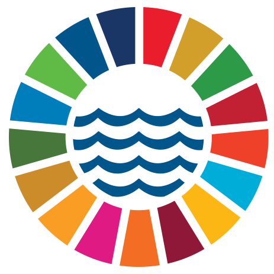

ODS 14 | Vida na água
Conservar e promover o uso sustentável dos oceanos, dos mares e dos recursos marinhos para o desenvolvimento sustentável

Os oceanos tornam a vida humana possível por meio da provisão de segurança alimentar, transporte, fornecimento de energia, turismo, dentre outros. Além, por meio da regulação da sua temperatura, química, correntes e formas de vida, os oceanos regulam muitos dos dos serviços ecossistêmicos mais críticos do planeta, como ciclo do carbono e nitrogênio, regulação do clima, e produção de oxigênio. Além, os oceanos representam aproximadamente US$ 3 trilhões da economia global por ano, ou 5% do PIB global.
Objetivos:
- Até 2025, prevenir e reduzir significativamente a poluição marinha de todos os tipos, especialmente a advinda de atividades terrestres, incluindo detritos marinhos e a poluição por nutrientes
- Até 2020, gerir de forma sustentável e proteger os ecossistemas marinhos e costeiros para evitar impactos adversos significativos, inclusive por meio do reforço da sua capacidade de resiliência, e tomar medidas para a sua restauração, a fim de assegurar oceanos saudáveis e produtivos
- Minimizar e enfrentar os impactos da acidificação dos oceanos, inclusive por meio do reforço da cooperação científica em todos os níveis
- Até 2020, efetivamente regular a coleta, e acabar com a sobrepesca, ilegal, não reportada e não regulamentada e as práticas de pesca destrutivas, e implementar planos de gestão com base científica, para restaurar populações de peixes no menor tempo possível, pelo menos a níveis que possam produzir rendimento máximo sustentável, como determinado por suas características biológicas
- Até 2020, conservar pelo menos 10% das zonas costeiras e marinhas, de acordo com a legislação nacional e internacional, e com base na melhor informação científica disponível
- Até 2020, proibir certas formas de subsídios à pesca, que contribuem para a sobrecapacidade e a sobrepesca, e eliminar os subsídios que contribuam para a pesca ilegal, não reportada e não regulamentada, e abster-se de introduzir novos subsídios como estes, reconhecendo que o tratamento especial e diferenciado adequado e eficaz para os países em desenvolvimento e os países menos desenvolvidos deve ser parte integrante da negociação sobre subsídios à pesca da Organização Mundial do Comércio
- Até 2030, aumentar os benefícios econômicos para os pequenos Estados insulares em desenvolvimento e os países menos desenvolvidos, a partir do uso sustentável dos recursos marinhos, inclusive por meio de uma gestão sustentável da pesca, aquicultura e turismo
- Aumentar o conhecimento científico, desenvolver capacidades de pesquisa e transferir tecnologia marinha, tendo em conta os critérios e orientações sobre a Transferência de Tecnologia Marinha da Comissão Oceanográfica Intergovernamental, a fim de melhorar a saúde dos oceanos e aumentar a contribuição da biodiversidade marinha para o desenvolvimento dos países em desenvolvimento, em particular os pequenos Estados insulares em desenvolvimento e os países menos desenvolvidos
- Proporcionar o acesso dos pescadores artesanais de pequena escala aos recursos marinhos e mercados
- Assegurar a conservação e o uso sustentável dos oceanos e seus recursos pela implementação do direito internacional, como refletido na UNCLOS [Convenção das Nações Unidas sobre o Direito do Mar], que provê o arcabouço legal para a conservação e utilização sustentável dos oceanos e dos seus recursos, conforme registrado no parágrafo 158 do “Futuro Que Queremos”